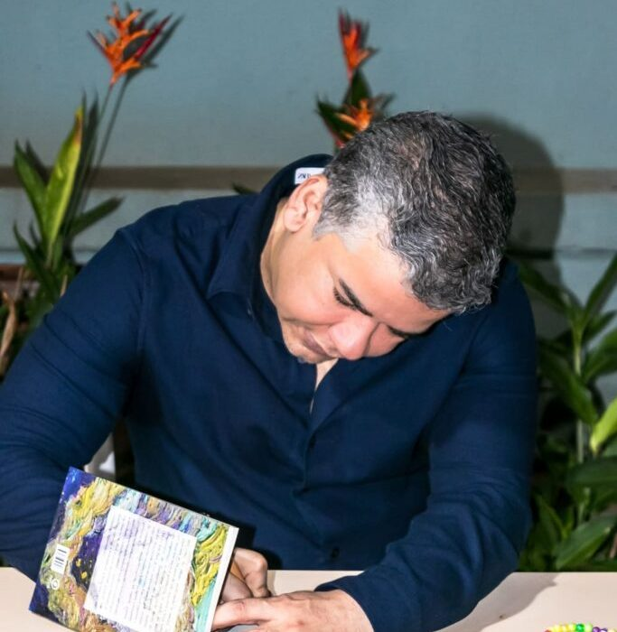
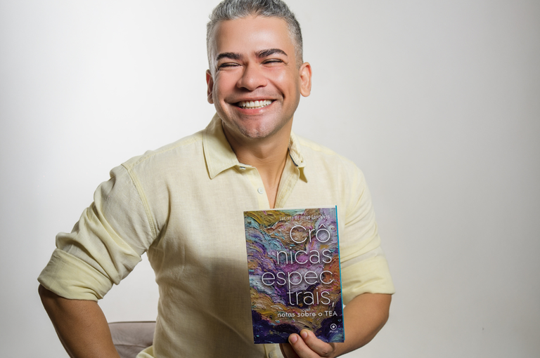
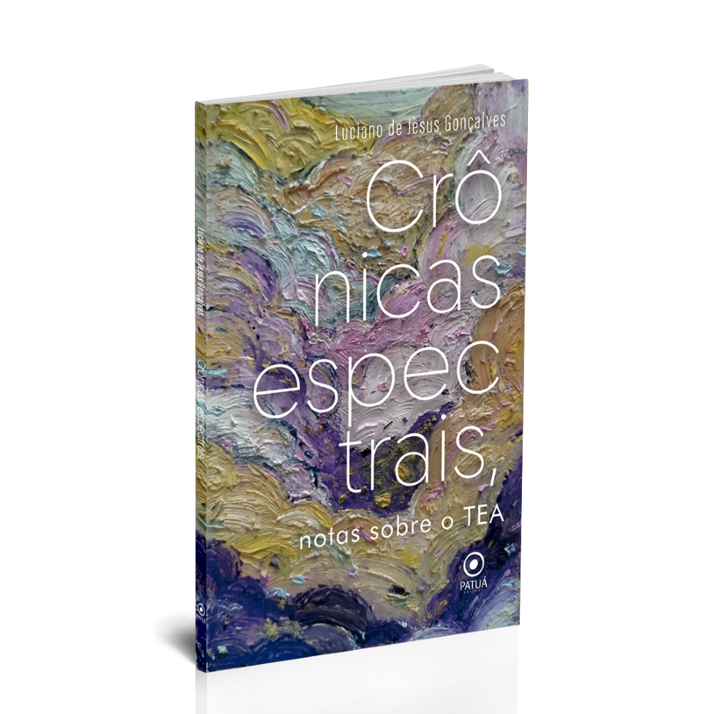
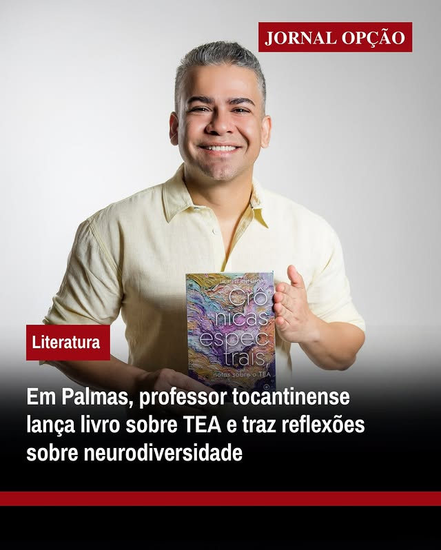
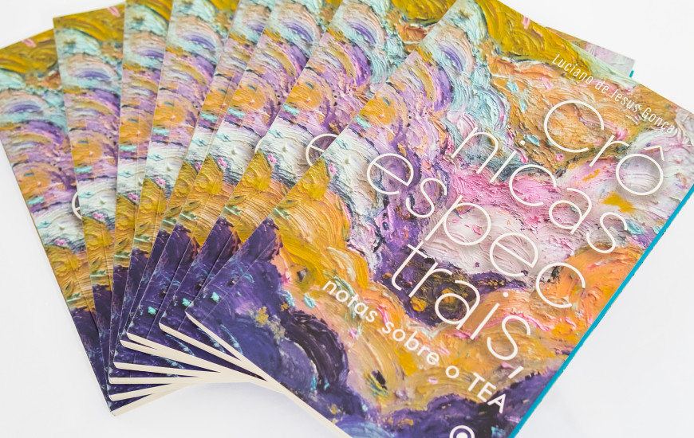
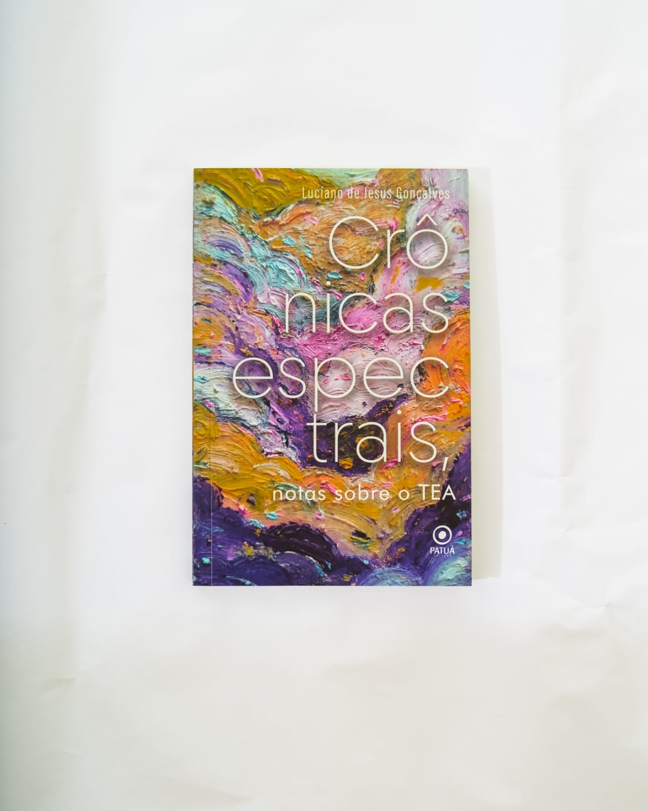

Crônicas Espectrais na Mídia
Descubra as últimas reportagens, entrevistas, artigos autorais e menções do livro em portais de renome.
Artigos de Opinião
Reflexões exclusivas de Luciano Gonçalves para grandes portais.
Autismo e NR-01: Desafios da Ergonomia Psicológica
Uma análise necessária sobre como as normas de segurança do trabalho podem acolher a neurodiversidade através da saúde mental.
Ler Artigo CompletoVolta às aulas: e agora, professor autista?
A jornada do educador neurodivergente no retorno ao ambiente escolar e as nuances da inclusão real na prática docente.
Ler Artigo CompletoReportagens e Entrevistas
Professor transforma diagnóstico tardio em literatura
25/02/2026 | Canal Autismo
Ler Notícia
Lançamento sobre neurodiversidade no CONVERGENTES 2025
03/09/2025 | Pauta73
Ler Notícia
Biblioteca Demonstrativa recebe o lançamento de Crônicas Espectrais
01/08/2025 | MinC
Ler Notícia
Professor do IFTO lança livro ‘Crônicas Espectrais’
21/05/2025 | Canal Autismo
Ler NotíciaAutismo: conscientização e inclusão além do dia 2 de abril
02/04/2025 | Portal IFTO
Ler Notícia
Livro reflete sobre neurodiversidade e autodescoberta
14/03/2025 | Mariana Kotscho
Ler Notícia
Obra de Luciano Gonçalves aborda saúde mental com humor
13/03/2025 | Jornal Opção
Ler Notícia
Crônicas Espectrais será lançado nesta sexta, 14 em Palmas
13/03/2025 | T1 Notícias
Ler NotíciaLuciano Gonçalves lança livro de estreia em Palmas
12/03/2025 | Portal Stylo
Ler NotíciaLivro de professor tocantinense será lançado em Palmas
27/01/2025 | Tocantins Cultural
Ler Notícia
Professor do IFTO publica crônicas sobre Autismo
10/01/2025 | CONIF
Ler NotíciaCitações e Participações
11/11/2025
Governo do Tocantins fortalece conscientização sobre autismo
07/10/2025
Lançamento do livro ‘Meu Coração Desenha’ na 48ª Roda Literária
14/09/2025
Convergentes 2025: Colegiado de Psicologia da Anhanguera
02/08/2025